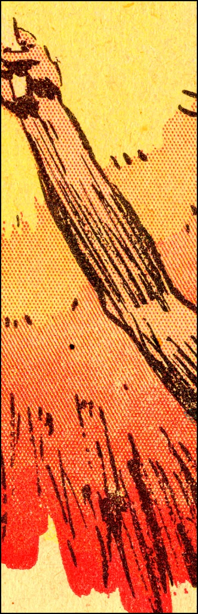

Dithering is, essentially, a way to break up shapes and create the illusion of more colours than actually exist within the image. You may be more familiar with its cousin, commonly known as halftoning.
That's a panel from a 1933 Tarzan comic strip, as sourced by the Legion Of Andy blog, in part 8 their fascinating writeup on comic book printing techniques
You can see how, while there are only three ink colours there, and they're not mixing at all, a gradient is created by increasing the density of the red marks.
My shader here does essentially the same thing, forcing the image to black and white and controlling the density of black pixels to match the shades of light and dark in the original image.
Have a look below and see how it works! Feel free to zoom in to see the detail or save the generated image as a file!
Upload an image below to run the shader on it!
(default image is a jade hare figurine from the british museum collection online, here).